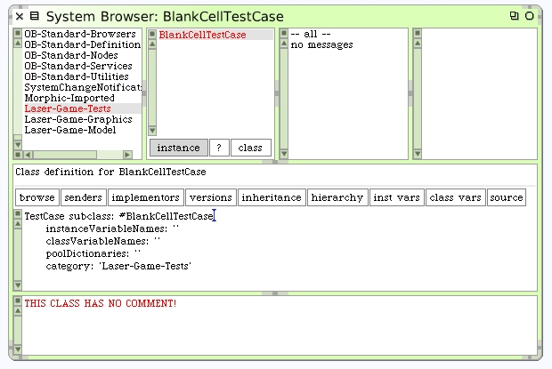
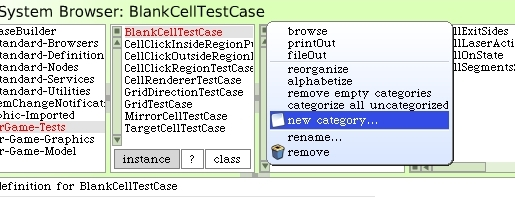
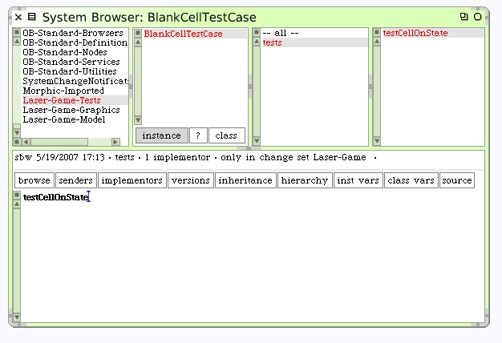

Unit Test the Initial Model
The Blank Cell is an excellent place to begin writing our unit tests. Select the "Laser-Game-Tests" system category in your class browser. We want to create a new Test Case for testing our BlankCell class.
Create a subclass of TestCase named BlankCellTestCase.
Pay attention to the class definition for your new BlankCellTestCase. It must be a subclass of the class TestCase. This is easy to overlook. If you did it wrong already, no problem, just go back and correct it now and then save the code again.
To help keep methods organized within a class, Squeak provides method categories for each class. In this tutorial I refer to method categories as "protocols". Squeak provides a little menu inside the upper edge of the scrollbar. Depending on your Squeak scrollbar preference settings it will be on either the left or right side of the list pane.
Click on this menu and create a new protocol called "tests". Be sure that your browser is showing "instance" methods when you add this new method protocol.
Now, create a method called testCellOnState. Like with class creation and editing, we do this by editing the code in the lower pane once we have a method protocol selected.
